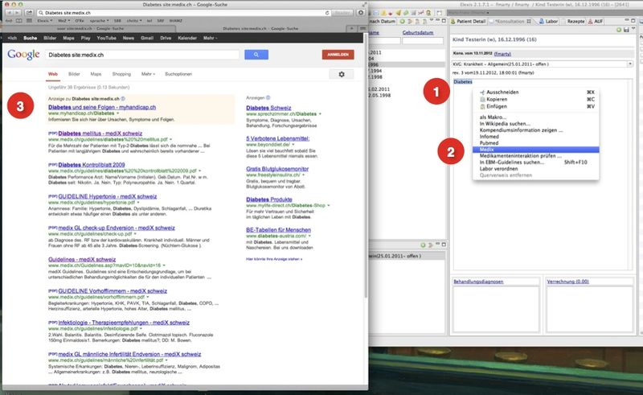

At.medevit.elexis.decision.feature.feature.group
| Version: | 3.0.0 |
| Kategorie: | KG-Führung |
| Beschreibung: | Verbindet mit der Fachinformation von Swissmedic | Prüft Medikamenten-Interaktionen | Erlaubt Parametrierung von Anfragen an Websites |
| Author der Docu: | Franz Marty <mesmeta@bluewin.ch> |
| Letzte Bearbeitung: | 11. August 2014 |
| Voraussetzungen: | Elexis 3.0 |
| Betriebssystem: | Windows, Mac, Linux |
| Lizenz: | Eclipse Public License (EPL) |
Contents
Einführung
Das Features bietet verschiedene Werkzeuge zur Unterstützung im Praxisalltag. Es verbindet mit der Fachinformation von Swissmedic und prüft die fix verordneten Medikamente auf Interaktionen. Es erlaubt auch eine Parametrierung individueller Suchanfragen. Alle Websites, welche eine Suchanfrage mittels URL erlauben, können auf diese Art direkt in Elexis eingebunden werden. Die Antwort ist auf diese Art nur 'ein Klick entfernt'
Installation / Deinstallation
Medelexis-Benutzer können über das Service-Abo installieren oder deinstallieren. OpenSource-Benutzer können das Feature über 'Hilfe' im Menü erreichen (siehe Installation Elexis 3.0 OpenSource)
Fachinformation Swissmedic
Einführung
Swissmedic ist die schweizerische Behörde für Zulassung von Medikamenten und stellt mit dem AIPS (Arzneimittelinformations-Publikationspplattform Swissmedic) eine vollständige Sammlung der Fachinformation für behördlich zugelassene Medikamente zur Verfügung.
Funktionen
Die Fachinformation zu einem Medikament kann folgendermassen nachgeschlagen werden:
- Markieren des Medikamentes, welches nachgeschlagen werden soll, in der View 'Fixmediaktion' oder 'Therapieplan' (1)
- Ein Klick auf das Swissmedic-Icon im Menü der View oben re (2) lanciert den Browser-Aufruf
- Der Webbrowser bringt die Fachinformation von Swissmedi (3)
Abbildung 1: Browser-Aufruf aus der Fixmedikation / Therapieplan
Medikamenten-Interaktionen EPHA
Einführung
Die Patienten werden zunehmend älter und leiden immer öfter an mehreren Erkrankungen (Polymorbidität). Mit ansteigender Anzahl verordneter Medikamente steigt das Risiko von Medikamenten-Interaktionen mit unerwünschten oder gefährlichen Nebenwirkungen exponential. Muss ein Patient mehr als 3 Wirkstoffe regelmässig einnehmen wird eine Überprüfung der Medikamenten-Interaktionen ohne elektronische Hilfsmittel sehr zeitraubend. Die Interaktions-Informationen von Epha sind übersichtlich dargestellt und sofort erreichbar.
Anbieter der Interaktions-Informationen
Epha (siehe auch Interaktionen)ist ein ‘spin-off’ des Pharmakologischen und Toxikologischen Institutes der Universität Zürich. Die Firma ist Spezialist für Dienstleistungen rund um die Medikamentenabgabe und Verschreibung/Rezeptierung. Unter anderem bieten sie einen Interaktions-Check mit guter Visualisierung. Die Interaktions-Informationen stammen aus dem Institut, die Empfehlungen sind praxisnah und als OpenSource zur freien Verfügung.
Funktionen
Eine Interaktion-Abfrage wird ausgelöst mit einem Klick auf das rot eingerahmte Symbol im Menü der View ‘Fixmedikation’ respektive 'Therapieplan' ( Abb 2 Punkt 1). In unserem Beispiel besteht die Fixmedikation aus den Medikamenten 'Sporanox', 'Klacid' und 'Simvasin'. Die Anfrage übergibt diese 3 Parameter dem Epha-Server zur Prüfung auf Verträglichkeit und bringt bei vorhandener Interaktion eine grafische Darstellung in einem Browserfenster zurück (Abb 2 im roten Rahmen). Vom 'Verursacher' der Interaktion (in unserem Beispiel Sporanox und Klacid) führt ein Pfeil auf das 'Opfer' (Simvasin) – d.h. in unserem Beispiel wird die Chance einer Simvasin-Nebenwirkung durch Sporanox und Klacid stark erhöht. Ein Klick auf den Pfeilkopf des Interaktionspfeils (Abb 2 Punkt 2) öffnet einen Kurzkommentar zur Nebenwirkung. In unserem Fall "Erhöhtes Risiko für Myopathien", Beurteilung: Kontraindiziert". Für die Prüfung eines neu zu verordnenden Medikamentes ist eine Interaktionsprüfung der Fixmedikation durchzuführen und das neue Medikament im Suchfeld des Browserfenster oben links einzutragen (Abb 2 Punkt 3). Die Interaktionabfrage testet dann die Verträglichkeit des neuen Medikamentes mit der Fixmedikation. Bei einer Interaktionsmeldung können so bei Bedarf sofort Alternativen geprüft und bei fehlender Indikation das neue Medikament in der Fixmedikation eingetragen werden. Abbildung 2: Die Anfrage öffnet ein Browser-Fenster mit dem grafischen Interface von Epha 800px
{kind=link}
Parametrierung von Anfragen an Websites
Einführung
Während den Konsultation wünscht sich der Arzt oft einen schnellen Zugriff auf verschiedenste Informationen. Die Informations-Bedürfnisse sind allerdings sehr individuell. Auf Wunsch von elexis-Anwendern entwickelten wir ein Plugin zur Parametrierung von Websiten, welche mittels einer URL eine Suchanfrage zulassen.
Funktion
Nach Selektion eines Wortes im Lauftext und 'rechts-Klick' öffnet sich ein Menü welches parametrierte Adressaten für eine Anfrage enthält. Die Auswahl eines Adressaten sendet den markierten String an die entsprechende Webadresse und löst eine Suchanfrage aus. Als Resultat öffnet sich ein Browserfenster mit der gewählten Website und zeigt die Resultate der verarbeiteten Suchanfrage. Zu den Beispielen:
- Bei der Selektion des Strings "Diabetes" in der Konsultations-(Abb 3 Punkt 1) View von Elexis und der Wahl von "Infomed" (Abb 3 Punkt 2) im Rechtsklick-Menü öffnet sich das Browserfenster und zeigt das Suchresultet der Abfrage "Diabetes" (3) auf der Website von Infomed (Abb 3 Punkt 3).
- Bei der Selektion des Strings "Diabetes" (Abb 4 Punkt 1) und der Wahl von "Medix" im Rechtsklick-Menü (Abb 4 Punkt 1) öffnet sich das Browserfenster und zeigt das Suchresultet von Google nach Dokumenten mit dem String "Diabetes" auf der Website von medix.ch (Abb 4 Punkt 3).
Abbildung 3: Die Suchanfrage "Diabetes mellitus" bei Infomed
Abbildung 4: Die Suchanfrage "Diabetes mellitus" bei Google für die Website medix.ch 
Konfiguration
Jede Website, welche Anfragen mittels einer URL zulässt, kann nach einer Parametrierung im Rechtsklick-Menü aufgerufen werden. Die Parametrierung der individuellen Suchanfragen erfolgt in den ,Einstellungen‘ von Elexis (Menü --> Datei / Einstellung / Online Dienste / Weblinks). Nach Klick auf 'Weblinks' erscheint ein Dialogfenster wie in Abbildung 5. Das Dialogfenster zeigt zwei Leerfelder (Abbé Punkt 1) für die Parameter und in unserem Beispiel vier parametrierte Einträge Abb 5 Punkte A-D). Parametrierung: Ein Klick auf den Button "Weblink hinzufügen" öffnet zwei Textfelder:
- Im linken Textfeld 'Name' ist die Bezeichnung des gewählten Webservice einzutragen. Dieser Eintrag erscheint nach der Parametrierung im rechts-klick Menü.
- Im rechten Textfeld 'Link' ist die URL des Webservice und der Platzhalter einzutragen .
Beispiel A parametriert eine Anfrage an 'Infomed' . Als Bezeichner für das Menü ist Infomed eingetragen. Das Textfeld re setzt sich zusammen aus der URL, welche bei Infomed eine Suchanfrage induziert http://www.infomed.ch/infomed_search.php?zoom_query= und dem Platzhalter für die Suchanfrage [text.selection]. Dieser Platzhalter wird vor dem Versenden durch den markierte Begriff ersetzt. In Beispiel B ist eine Suchanfrage an Pubmed parametrisiert. Lässt eine Website die Suche mittels eines URL-strings nicht zu, hilft oft eine Google-Suche nach Dokumenten auf einer Website weiter. Beispiel C parametriert eine Anfrage bei Google für eine Suche auf der Website von medix.ch. Dem Suchstring von Google http://www.google.ch/search?site=&source=hp&q= wird der Platzhalter [text.selection] angehängt und danach die Website, auf der gesucht werden soll mit site:medix.ch angegeben. Abbildung 5: Dialog für die Parametrierung